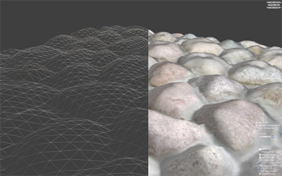
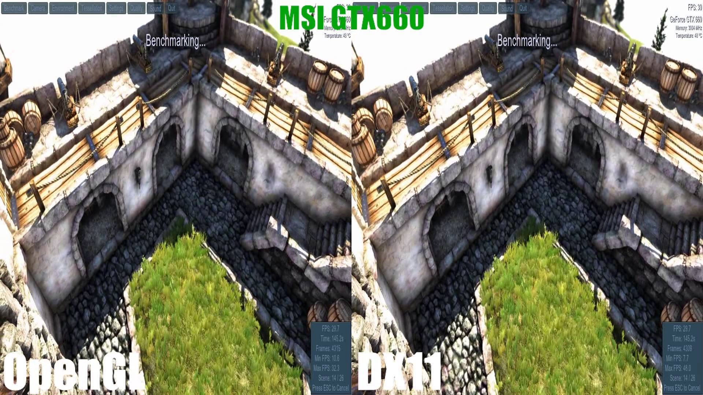

Programmation graphique
Description: La programmation graphique est une partie du travail que l'on doit réaliser pour faire un jeu ou une simulation. Ceci consiste à se concentrer sur le visuel. Aucun jeu n'en ressort à la fin, mais plutôt un "engine" graphique. Les collisions sont souvent exclus de la programmation graphique. C'est la programmation de jeux (game programming) qui se charge des collisions, des missions, etc. Plusieurs techniques sont utilisé en programmation graphique, quelques unes très avancées, d'autres plus simples. Les "shaders", la tesselation, le "displacement mapping", le "bump mapping" et bien d'autres.
Les exemples suivants sont des exemples de ce que vous allez pouvoir créer après ce tutoriel. Il y a plus de chose comme la lumière, le son, le text, l'eau. Alors jetez y un coup d'oeil!
Displacement Mapping
Comparaison entre une texture sans modification, avec bump mapping
et avec displacement mapping

Tesselation

Kara
Un exemple de Quantum Dream, avant d'avoir fait Beyond:two souls, d'une programmation graphique où seul le visuel et l'audio est présent.
Extra Credits
Différence entre le graphique et l'esthétique
Introduction
"DirectX est une technologie qui aide à créer les effets visuels and audios qui vient avec les jeux. Il peut aider votre ordinateur à gagner plus de performance des programmes multimédias comme des jeux ou des films.¹" DirectX est un outil qui vous aide à mieux créer votre jeux, plus efficacement. Les jeux que vous allez faire vont seulement fonctionner sur les platformes Microsoft, comme Windows et Xbox. C'est important de prendre ceci en considération. Si vous choisissez plus tard de l'adapter sur la Ps4, sur Linux ou sur d'autres platformes, vous devrez refaire votre jeu depuis le début.
Pourquoi j'utiliserais DirectX si je ne serai pas capable de mettre mes jeux sur d'autres platformes?
C'est parce que les joueurs ont une meilleur expectation d'un jeu qui utilise DirectX qu'un jeu qui utilise OpenGL. Avant de faire quoique ce soit, il est recommendé de savoir se que vous attendez. Si vous voulez que votre jeux d'être multi-platforme, vous devriez plus utiliser OpenGl et vous allez pouvoir avoir une plus grande audience. Ou vous pouvez utiliser DirectX, votre jeu sera mieux perçu de vos joueurs, alors plus de personne de votre audience ciblée vont l'acheter. Globallement, votre jeux aura le même nombre de personne qui l'achète, alors vous devriez vous focusser sur ce que vous attendez d'eux.
Les résultats sont les mêmes?
C'est difficile de dire parce que de comparer deux jeux différents (l'un qui utilise DirectX et l'autre OpenGL) vont avec des qualités différentes. Certains jeux sont focusés sur la méchanique, d'autre sur le graphique. Chanceux comme nous le sommes, quelques personnes ont fait le même jeux sur les deux APIs. Il n'y a pas de réel différence; le nombre de FPS sont les mêmes, les graphics sont identiques... Tous se ressemble. Bien sûr, il y a plusieurs débats sur lequel est le meilleur. Dans ce tutoriel, vous allez être préparé pour l'industrie du jeu video, alors vous allez apprendre DirectX, mais rien n'est désavantageux avec OpenGL.
Grande image 1

Grande image 2
_______________________________
¹ windows.microsoft.com